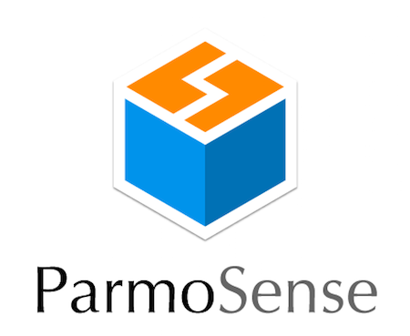
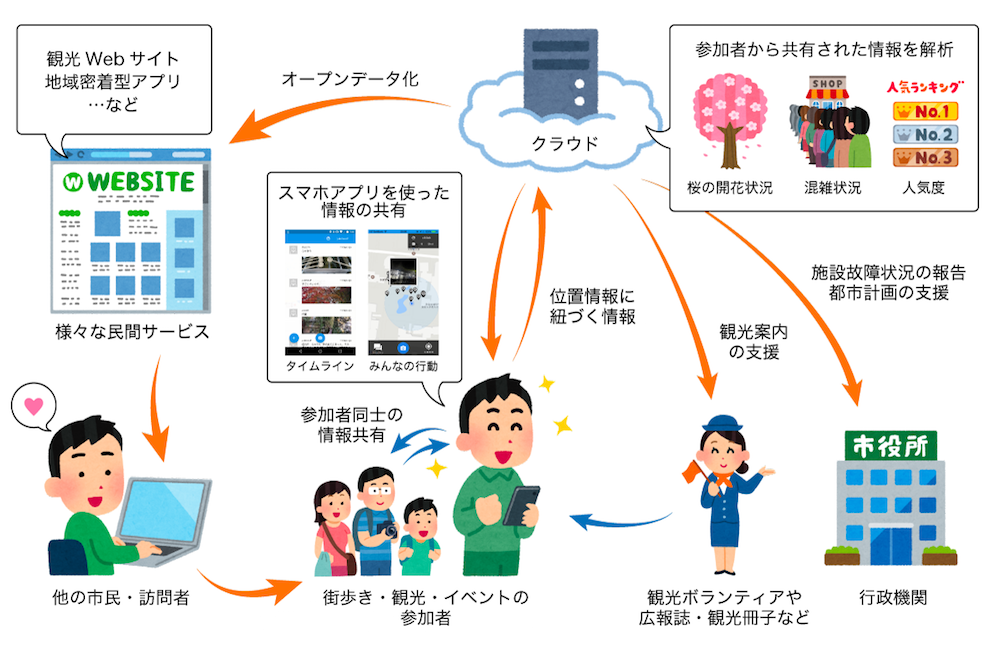

Conceptsコンセプト

ParmoSenseは、街歩き・観光・地域イベントなどの参加者が、互いに「位置情報」に紐づく「情報」をリアルタイムに共有するためのプラットフォームです。
また、リアルタイムな情報共有にとどまらず、都市環境情報の整備（参加型センシングアプリ）や、マッピングパーティやFix My Streetといった地域活動を行うためのアプリとして活用できます。
収集したデータは、Web API 経由で、XMLやJSON、KMLなど、オープンデータとして利用可能な形式として出力可能です。
このオープンデータを利活用することで、様々な民間サービス（観光Webサイトや地域密着型の便利アプリなど）や、地域の観光案内の品質向上、行政に対する施設故障状況の報告などといったことが実現可能となります。

このようなアプリケーションは、通常、イベントごとにバラバラのアプリとして提供される事が多く、
参加するユーザはイベント毎にアプリをインストールしなければならず（導入コストが高い）、
仕組みの持続性に問題があるといえます。
ParmoSense では、１つのアプリで様々なイベントに参加可能なプラットフォームになっています。
ParmoSenseは既に、街歩きイベントから学術研究の実証実験、スタンプラリーなど多岐にわたるイベントにて、運用を行っています。